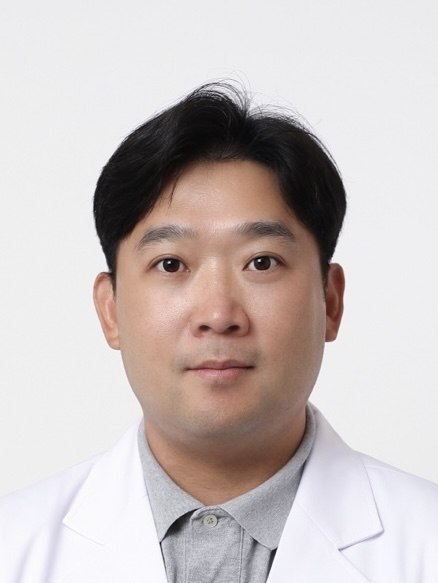
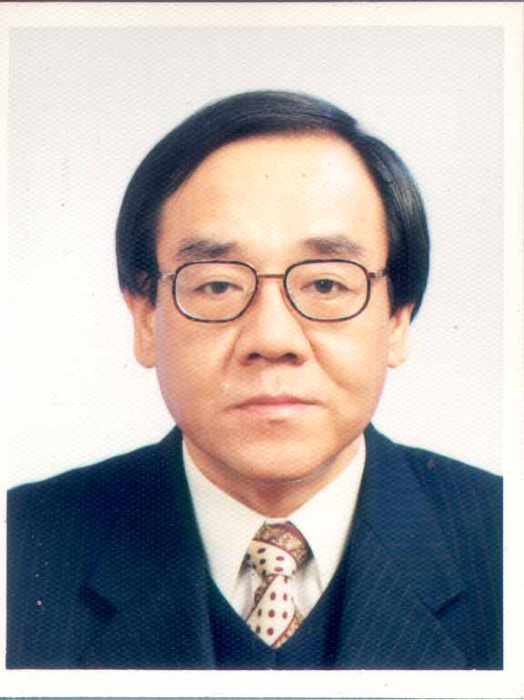
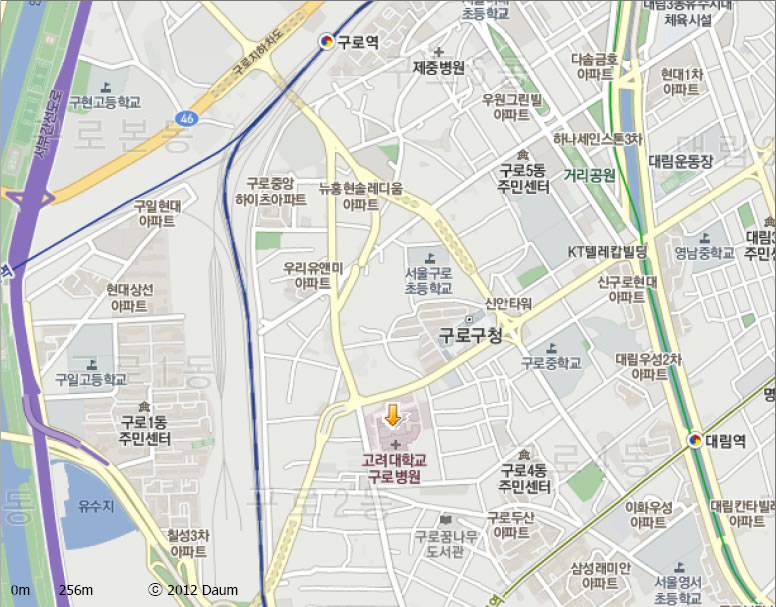

비침습 생체영상 · 분자영상 · AI 진단 · 3D 정량계측
Medical Imaging & Convergence Medicine Research Laboratory
본 연구센터는 2000년에 설립되어 인체에 영향을 주지 않는 방법 (non-invasive method in vivo)을 기본으로 하는 영상 및 의공학 연구를 통하여 computerized automatic diagnostic system을 구축하고, 이를 바탕으로 인체 질환을 컴퓨터가 진단할 수 있는 미래 컴퓨터 의사의 시대를 개척하는 연구를 수행하고 있습니다.
21세기 첨단과학의 총아로 자리매김할 공학과 의학의 융합연구 (Fusion & Hybrid Science)로서, 비침습 생체영상, 분자영상기반 치료, AI 기반 진단 시스템, 고해상도 영상기기 개발 등 선진국에서도 아직 구체적 연구성과가 없는 미개척 분야를 선도하고 있습니다.

현 소장 (Current Director)
고려대학교 의과대학 융합의학교실 교수
전공: 의용생체공학 (Biomedical Engineering)
학위: 고려대학교 공학사(전자공학), 공학석사·박사(의용생체공학)
연구분야: Medical Imaging Segmentation, Fluorescent Medical Imaging, Molecular Cell Imaging
소속: 고려대학교 의과대학 융합의학교실
연구실: 고려대학교 부속 구로병원 영상의학연구소

설립 소장 (Founding Director, 2000~)
고려대학교 의과대학 피부과학교실 교수
학위: 고려대학교 의과대학 의학사·석사·박사
경력: 고려대학교 의과대학 교수 (1997~), BK21 의과학사업단 학술위원장, 비침습 생체영상 연구회장, 첨단영상진단기기 기반기술개발사업단장
E-mail: choh@korea.ac.kr
Tel: (02) 2626-1891 | Fax: (02) 2626-1900
Stereo image 기법 등을 이용한 피부 및 인체장기 표면의 3차원 정량 계측. 질환의 severity 및 치료 효과 정량화, Neural Network 기반 computerized automatic diagnostic approach 연구.
인체 표면의 색채 분석 기술 및 의학적 응용 연구. 피부 질환의 정량적 색채 평가.
SEM 등을 이용한 나노미터(nm) 단위의 인체 표면구조 정량화. 현대과학의 미개척 분야로서 새로운 의학 학문영역 확대.
Magnetic Resonance Spectroscope와 MR Microscope를 이용한 non-invasive in vivo 상태의 인체표면 미세구조 및 생리·생화학적 연구.
파킨슨병, 당뇨병, 심혈관질환, 화상, 백반증 등 난치병에 대한 분자영상기반 줄기세포치료법 개발. 폐암·피부암·천식·아토피 맞춤치료제 개발. 줄기세포 tracking 기술, 형질전환 동물 제작, ADME 평가시스템 구축.
고해상도 Digital X-ray, 고자장 MR, 4D 초음파, Phase Contrast X-ray, In vivo Confocal 현미경 등 신기술 기반 고해상도 생체영상기술 개발. 실시간 3D/4D 영상처리 및 복합영상 융합 분석 기술. MRS, MR 분자영상, Confocal 현미경 기술을 결합한 융합 생체영상기기 체계 구축.
Torsometer, Raman 등 non-invasive 방법의 의학적 응용 연구. 기능성 화장품, 피부 도포제, 항노화 피부 치료제 개발 및 효과·효능 검증 연구.
📄 2024 SCI(E) 논문 (27편) — 최근 연구실적
| 저자 | 논문제목 | 게재 학술지 | 역할 | 월 |
|---|---|---|---|---|
| 김재영 | Polyhexamethylene Guanidine Phosphate Induces Restrictive Ventilation Defect and Alters Lung Resistance and Compliance in Rats | TOXICS | 참여 | 10 |
| 김재영 | Deciphering the Toxicity of Polyhexamethylene Guanidine Phosphate in Lung Carcinogenesis: Mutational Profiles and Molecular Mechanisms | CHEMOSPHERE | 참여 | 4 |
| 김재영 | Longitudinal Long Term Follow Up Investigation on the Carcinogenic Impact of Polyhexamethylene Guanidine Phosphate in Rat Lungs | SCIENTIFIC REPORTS | 참여 | 3 |
| 김재영 | Impact of the COVID-19 Pandemic on Obesity, Metabolic Parameters and Clinical Values in the South Korean Adult Population | J. CLINICAL MEDICINE | 교신저자 | 5 |
| 김재영 | Subchronic Particulate Matter Exposure Underlying Polyhexamethylene Guanidine Phosphate-Induced Lung Injury: Quantitative and Qualitative Assessment with MRI | HELIYON | 참여 | 7 |
| 김재영 | Comparison of Laser and Traditional Lancing Devices for Capillary Blood Sampling in Patients with Diabetes Mellitus | LASERS IN MEDICAL SCIENCE | 참여 | 7 |
| 김재영 | Comparison Between a Laser-Lancing Device and Automatic Incision Lancet for Capillary Blood Sampling from the Heel of Newborns | J. PERINATOLOGY | 참여 | 1 |
| 백유상 | Parameter-Based Transfer Learning for Severity Classification of Atopic Dermatitis Using Hyperspectral Imaging | SKIN RESEARCH AND TECHNOLOGY | 참여 | 4 |
| 백유상 | Transformer Based on the Prediction of Psoriasis Severity Treatment Response | BIOMEDICAL SIGNAL PROCESSING AND CONTROL | 교신저자 | 3 |
| 백유상 | Human Papillomavirus Detection Rates in Bowen Disease: Correlation with Pelvic and Digital Region Involvement | CLINICAL AND EXPERIMENTAL DERMATOLOGY | 교신저자 | 8 |
| 손상욱 | Bridging the Gap: Comparing Patient-Clinician Views on Treatment Goals in Atopic Dermatitis | DERMATOLOGY AND THERAPY | 참여 | 8 |
| 손상욱 | Long-Term Efficacy and Safety of Risankizumab: A Retrospective, Multicenter, Real-World Study | ACTA DERMATO-VENEREOLOGICA | 참여 | 6 |
| 손상욱 | Quality of Life and Burden of Moderate-to-Severe Atopic Dermatitis in Adult Patients Within the Asia-Pacific Region | DERMATOLOGY AND THERAPY | 참여 | 9 |
| 손상욱 | Drug Survival Analysis of Dupilumab and Associated Predictors in Patients with Atopic Dermatitis in South Korea | SCIENTIFIC REPORTS | 교신저자 | 7 |
| 손상욱 | Management of Moderate-to-Severe Atopic Dermatitis in Adults: A Cross-Sectional Survey of Dermatologists in Asia-Pacific | DERMATOLOGY AND THERAPY | 참여 | 9 |
| 손상욱 | Phase 1/2 Trials of Human Bone Marrow-Derived Clonal Mesenchymal Stem Cells for Treatment of Moderate to Severe Atopic Dermatitis | J. ALLERGY AND CLINICAL IMMUNOLOGY | 참여 | 10 |
| 손상욱 | Risk of Developing Hypertension in Atopic Dermatitis Patients Receiving Long-Term Low-Dose Cyclosporine: A Nationwide Study | ANNALS OF DERMATOLOGY | 참여 | 4 |
| 오영택 | Proinsulin C-Peptide Inhibits High Glucose-Induced Migration and Invasion of Ovarian Cancer Cells | BIOMEDICINE & PHARMACOTHERAPY | 참여 | 3 |
| 오영택 | Glyoxalase 1: Emerging Biomarker and Therapeutic Target in Cervical Cancer Progression | PLOS ONE | 교신저자 | 6 |
| 오영택 | Development and Validation of AI-Based Analysis Software to Support Screening System of Cervical Intraepithelial Neoplasia | SCIENTIFIC REPORTS | 제1저자 | 1 |
| 오영택 | Position Statement about Gender-Neutral HPV Vaccination in Korea | VACCINES | 제1저자 | 10 |
| 오영택 | Enhancing Cervical Cancer Screening: Review of p16/Ki-67 Dual Staining as a Promising Triage Strategy | DIAGNOSTICS | 제1저자 | 2 |
| 오영택 | Assessing the New 2020 ESGO/ESTRO/ESP Endometrial Cancer Risk Molecular Categorization System for Predicting Survival | CANCERS | 제1저자 | 3 |
| 전지현 | Clinical Practice Guidelines for the Diagnosis and Treatment of Scabies in Korea: Part 1. Epidemiology and Clinical Manifestations | EWHA MEDICAL JOURNAL | 참여 | 10 |
| 전지현 | Clinical Practice Guidelines for the Diagnosis and Treatment of Scabies in Korea: Part 2. Treatment and Prevention | EWHA MEDICAL JOURNAL | 참여 | 10 |
| 전지현 | Human Papillomavirus Detection Rates in Bowen Disease: Correlation with Pelvic and Digital Region Involvement | CLINICAL AND EXPERIMENTAL DERMATOLOGY | 참여 | 7 |
※ 2024년 기준, 피부영상의학연구소 소속 연구자 포함 실적. 저널: TOXICS, CHEMOSPHERE, Scientific Reports, J. Clinical Medicine, Heliyon, Lasers in Medical Science, J. Perinatology, Skin Research & Technology, Biomedical Signal Processing & Control, Clinical & Experimental Dermatology, Dermatology & Therapy, Acta Dermato-Venereologica, J. Allergy & Clinical Immunology, Annals of Dermatology, Biomedicine & Pharmacotherapy, PLOS ONE, Vaccines, Diagnostics, Cancers, Ewha Medical Journal.
📄 SCI 논문
| 논문제목 | 게재학술지 |
|---|---|
| Biological Imaging of HEK293 Cells Expressing PLCγ1 Using Surface-Enhanced Raman Microscopy | Anal. Chem. 2007, 79, 916-922 |
| In vivo Real-Time Vessel Imaging of Atherosclerotic Plaque in ApoE-Knockout Mice Using Synchrotron Radiation Microscopy | J. Am. Coll. Cardiol. 47 (4): 330A-331A |
| Fast and Sensitive Analysis of DNA Hybridization in PDMS Micro-Fluidic Channel Using FRET | Chem. Commun. (14): 1509-1511 |
| Phase Contrast Radiography of Lewy Bodies in Parkinson Disease | NeuroImage 32 (2): 566-569 |
🛡️ 특허
| 특허명 | 국가 | 번호 |
|---|---|---|
| 표면 색채 분석 시스템 및 그 방법 | 대한민국 | 2006-26010 |
| 평면형 RF 코일과 경사자장 코일을 포함하는 고해상도용 MR 시스템 | 대한민국 | 제10-074534호 |
| 입체 영상을 이용한 향상된 피부 계측 시스템 | 대한민국 | 2007-0073369 |
| 영상분석을 이용한 악성흑색종 진단 시스템 | 대한민국 | 2007-0073754 |

📍 약도 이미지를 준비 중입니다